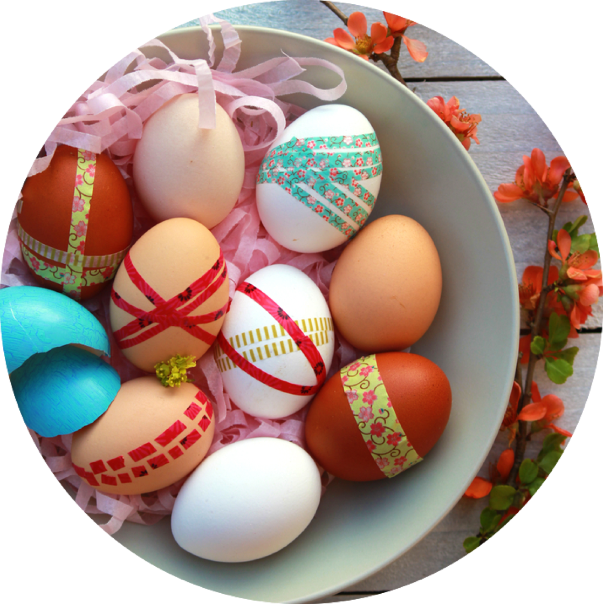

Painting Eggs
Painting easter eggs is a fun family activity! Go to a church or any group gathering in your area and participate in an easter egg hunt in which you painted the eggs!
Here are some activities and things to look for when the rainy season comes!
Painting easter eggs is a fun family activity! Go to a church or any group gathering in your area and participate in an easter egg hunt in which you painted the eggs!
A picnic with a loved one or friend! Spring is a time of getting back outside with your favorite sweater and sharing a sandwich and apples on a blanket. Don't forget the woven basket!
Whether it be for your significant other or if you want to fillt hat lonely winter vase, walk around the neighborhood and find some pretty flowers to put by the window sill.
Go to your local pond and bring the kiddos with you, along with a loaf of bread. With all the ducks happy as can be, they'd love a bite of bread. This is a wonderful way to spend a Sunday afternoon. Maybe even at your picnic!

If there isn't a more spring thing to do. Sidewalk chalk is a great activity to let your kids have at. They can play hopskotch or four-corners! The possibilities are endless.